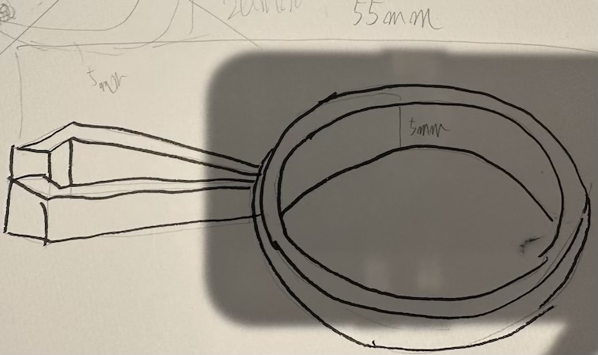
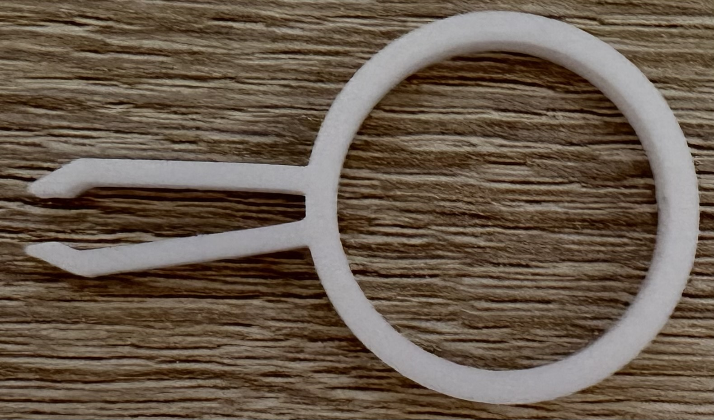
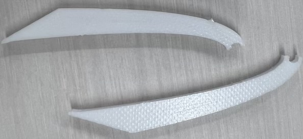

感染対策ピンセット
＜設計図＞

＜完成作品＞

＜設計図ファイル＞
stlファイル
＜作品の説明＞
円の部分をドアの持ち手より大きく作り、手で触れることなく開け閉めできるようにしたもの。
大きさは長さ55mm、高さ5mm
＜なぜ作ろうとおもったのか＞
ドアには細菌が多く、触れなくても開け閉めしたかったから。
＜製作プロセス＞
当初は持ち手を強く持てるよう厚くしようと考えました。
しかし、厚く作りつぎてしまうと、ピンセットの持ち手を軽く摘んだだけで、割れてしまいました。

なので完成品では、できるだけ薄くしてもピンセットとして機能するように作りました。
＜動画＞
＜反省点＞
デザインがシンプルすぎたので次回からは複雑なものを作っていきたい。